The disjointed debris of our childhood state still lurking within our adult consciousness act as a painful, disruptive force. A ghost-like little girl keeps tapping on a woman's consciousness, demanding attention, recalling a traumatic childhood event and thus distorting her experience of the present.
The film weaves paper-mâché puppet animation, drawn animation, computer animation and subtly altered live action. At the slam of a door, or a glimpse in a mirror, the present shrinks and transmutes into the past; painful memories seep through and poison it.
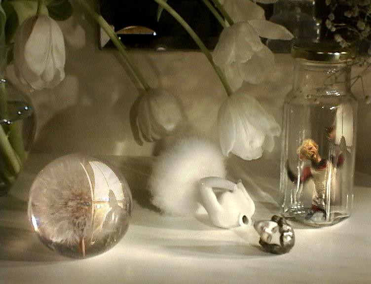
Beneath the formal experiment is something autobiographical. As a child Marjut had strabismus, a misalignment of the eyes, and remembers her mother's distant, distracted gaze. The ghost-like child of the film is a version of that earlier self.
It was terribly upsetting because you don't get that contact with people. My mother had this very depressed and sad way of looking through you.
Marjut Rimminen — on her childhood strabismus, in conversation about the making of the film
The animation resurrects the repressed and transparent child and forces the spectators to truly see her, not only with the help of their eyes.
Frames Cinema Journal — on the haptic spectatorship of the film
A compelling work which succeeds in subverting conventional definitions of story-telling, animation and cinema.
Tampere International Short Film Festival jury — 5 March 1997
It is like a kick in the kidneys.
Thomas Basgier — Animation World Network Magazine, 2 July 1997
Credits, awards and screenings
Words
Harriett Gilbert
Father and Young Man
Kevin O'Donohoe
Mother and Young Woman
Sarah Strickett
Voices
Anthony May, Melanie Hudson, Camilla Hunsley
Live-action design and production
Daniel Simpson, Adam Cutts, Mark Sewell
Lighting
Layne Comarasawmy
Editing and sound
Tony Fish
Sound and dubbing
Nigel Heath
Digital compositing
Timo Arnall
Director and animator
Marjut Rimminen
Producer
Lee Stork
Production
A Tricky Films production for Channel 4
Distribution
Channel Four International
🏆 Grand Prix, 1997 Tampere International Short Film Festival
🥈 Second Prize, Best Computer Assisted Animation, 1997 Los Angeles World Animation Celebration
🥈 Jury Special Prize, 1997 Krakow International Short Film Festival
🥇 The Grand Animation Prize, 1997 Vila do Conde Short Film Festival
🥇 First Prize, 1997 Fantoche International Animation Festival
🥉 Honorary Distinction for Best Animation, 1997 Drama International Short Film Festival
Finalist, 1998 British Animation Awards
🥇 Directors' Choice Award for Most Innovative Animation Work, 1998 Images Festival, Toronto
The Stain
1991 · 16mm · 11 minutes
A film by Marjut Rimminen and Christine Roche
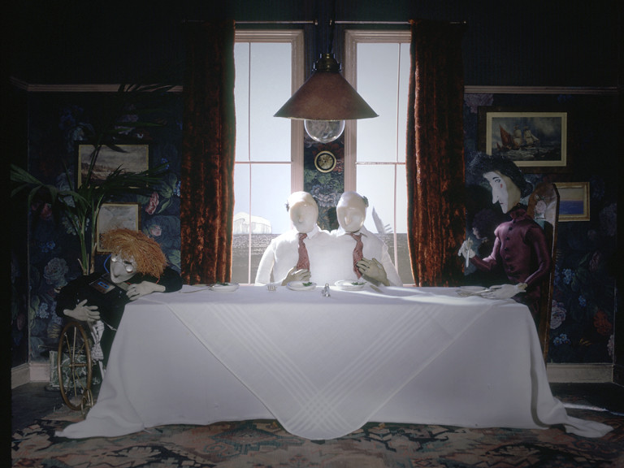
Triggered by an actual news item about suicidal octogenarian twins, The Stain is a dark, domestic thriller which uses drawn, puppet, pixilation and live-action animation styles to spin a claustrophobic web of incest and intrigue.
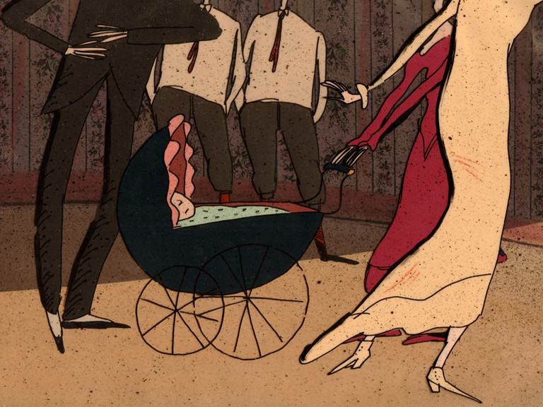
An examination of incest and sex abuse within the nuclear family. … The Freudian ability of animators deftly to display the motives behind the mask is one of the great strengths of the form. Animation can handle difficult delicate topics with extraordinary lightness and perception.
Jeanette Winterson — Sight and Sound, October 1992
An imaginative animated fable about the benefits of family life: envy, incest, murder. With all the sinister simplicity of a tale by Edward Gorey, it is exactly the sort of thing that distributors should be picking up as support for their new features.
Waldo Lydecker — Time Out, 31 July 1991
This is a kind of crusade for me. From the very moment I discovered animation, I sensed that it could deal with life's complex issues and be more powerful in it than live action. We receive animation differently. By not being real, animation can seduce the viewer to look at something he rather does not, and reach beyond the eyes, directly to the emotions of the viewer.
A Smoothcloud Production for Channel Four Television
Distribution
Channel Four International
🥈 Special Jury Prize, 1992 Hiroshima International Animation Festival
🥈 Special Jury Prize, 1992 San Francisco International Film Festival
Learned by Heart / Sydämeen kätketty
2007 · 29 minutes · Documentary animation
A film by Marjut Rimminen and Päivi Takala
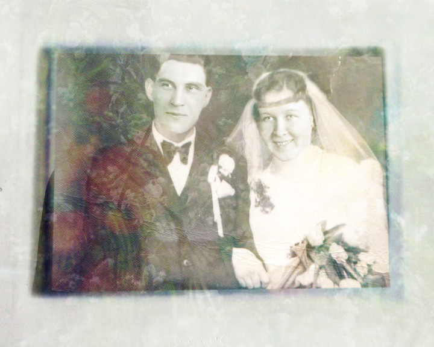
Finland emerged from the Second World War in a schizophrenic state, having survived two wars against the Soviet Union with her independence intact, but having officially come out on the losing side. The film explores post-war adjustment in five episodes, examining how fathers struggled with civilian life after combat while mothers took control of household organisation.
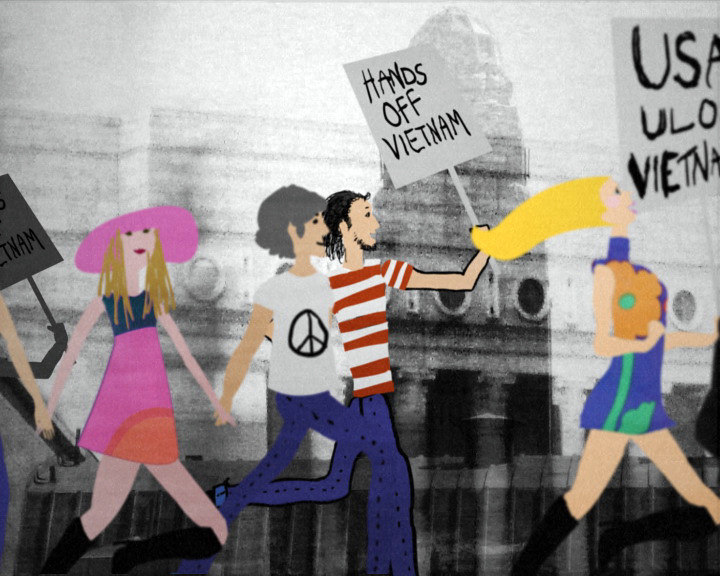
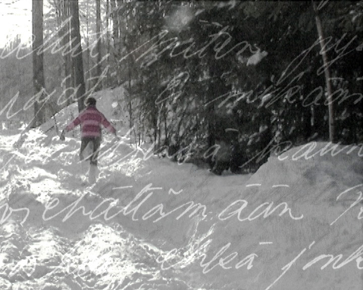
Credits, awards and screenings
Screenplay
Marjut Rimminen, Päivi Takala
Direction
Marjut Rimminen, Päivi Takala
Cinematography
Marjut Rimminen, Kari Sohlberg
Editing
Tony Fish
Sound
Patrick Boullenger, Päivi Takala
Music
Päivi Takala
Producer
Anna-Kaisa Sukura for Soundsgood Productions Oy
Executive producer
Päivi Takala for Soundsgood Productions Oy
Broadcast
YLE
International Premiere, 2007 IDFA — International Documentary Film Festival Amsterdam
Some Protection
1987 · 16mm · 9 minutes
Part of Blind Justice, a four-part Channel 4 series on women and the law
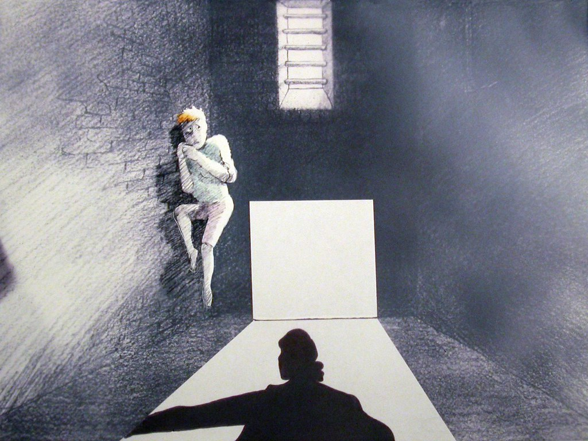
An animated documentary based on the true story of Josie O'Dwyer, with her own voice as personal commentary. The film shows the devastating effect that detention and imprisonment have on young girls who are sent in "for their own protection".
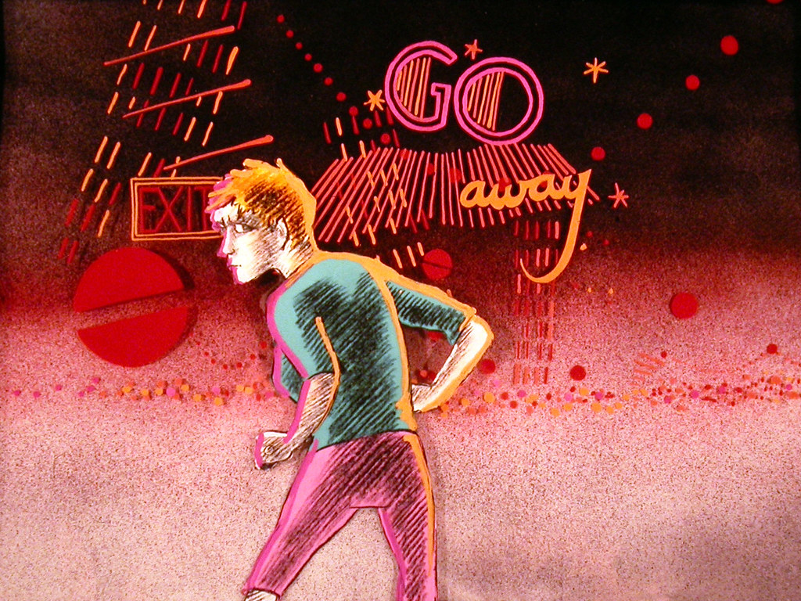
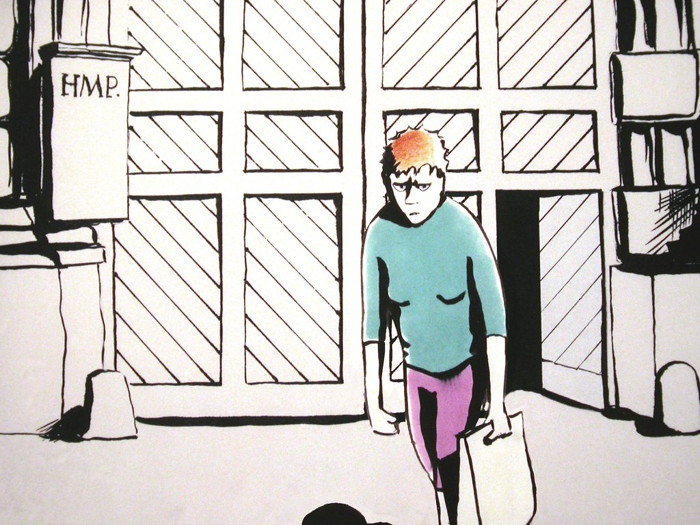
The impact of Some Protection owes much to her ability to evoke visually and kinetically the moods, emotions and feelings of the protagonist, Josie O'Dwyer, as she narrates the true story of her experiences of detention and imprisonment.
James Leahy — The Guardian, 5 November 1987
It is widely assumed that documentary is about Griersonian grit, Flaherty fact and Wiseman wisdom, but this is to neglect the rich and varied tradition of documentary in the animated film. From Winsor McCay's Sinking of the Lusitania, to Marjut Rimminen's subjective documentary Some Protection, to Jan Svankmajer's The Death of Stalinism in Bohemia. Animation has documented the personal, social and political events that have shaped the world.
Dr Paul Wells — National Film Theatre lecture, November 1996
As an animator, I function best in my room, in a kind of solitary confinement. When Josie says the only escape from horrible reality was to go inside her head, I understood that very well.
Marjut Rimminen — Jayne Pilling, Women and Animation, BFI
Credits, awards and screenings
Research
Gail Pearce
Design and animation
Marjut Rimminen
Assistant animation
Kathleen Houston
Painting
Adrian Kern, Vanessa Luther-Smith, Stoney Parsons, Debra Thaine
Rostrum camera
Heather Reader
Editing and sound
Picturehead Production
Narration
Josie O'Dwyer
Voices
David Goodland, Jaqueline Holborough, Josie O'Dwyer
Director
Marjut Rimminen
Producer
Orly Yadin
Production
A Smoothcloud Production for Channel Four Television
Finalist — Best Film, 1988 British Animation Awards
Finalist — Best Sound Track, 1988 British Animation Awards
Urpo and Turpo
1996 · Animated TV series · 13 short films, 35mm
Directed by Liisa Helminen and Marjut Rimminen, based on Hannele Huovi's books
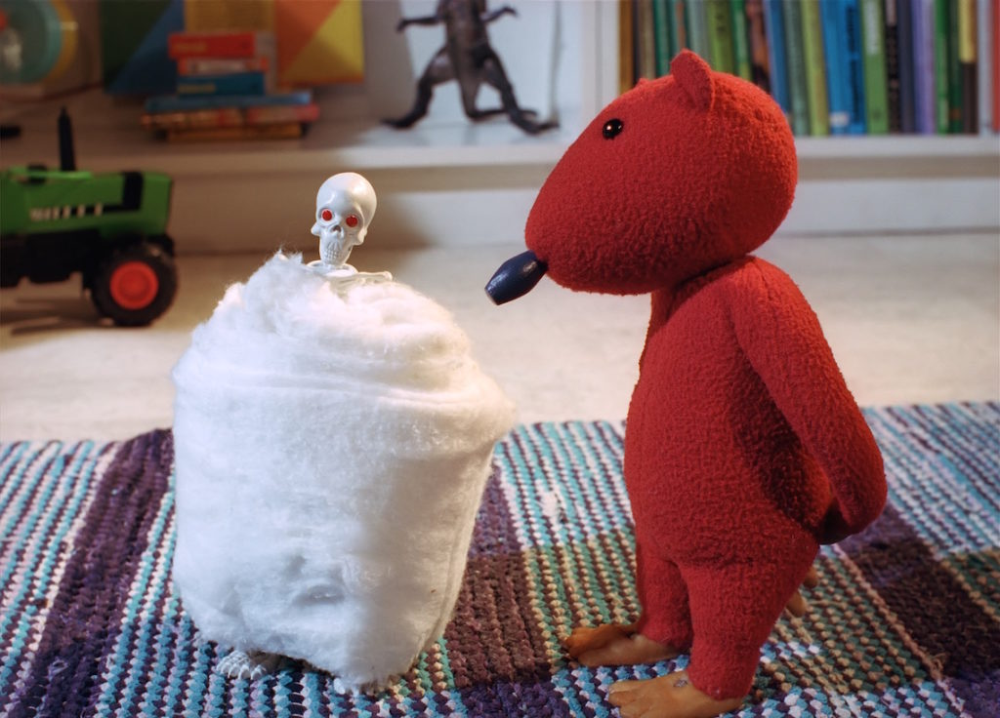
A Finnish stop-motion animated television series for children, based on Hannele Huovi's books. Teddy bears Urpo and Turpo live on a bookshelf in the children's room and are avaricious readers, particularly of the classics.
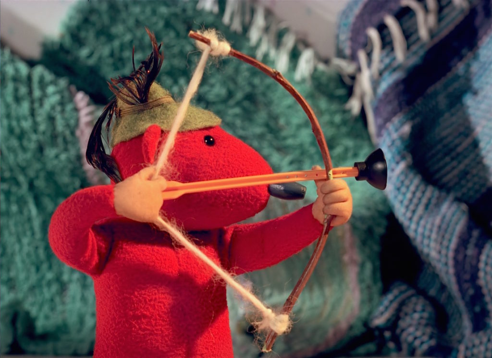
Urpo and Turpo are without a doubt Finland's funniest bears. Children, adults and critics alike fell in love first with the books and then with the autumn animated series. For animator Marjut Rimminen, the series was a new challenge.
Kirsi Riipinen — Kotiliesi, 4 October 1996
You don't need to speak slowly and loudly to children. Small minds move fast and anything but linearly. From whim to whim, jumping wildly from one thing to another.
Marjut Rimminen — Kotiliesi, 4 October 1996
I'm not a Feminist, but…
1986 · 35mm · 7 minutes
Adapted from the cartoons and drawings of Christine Roche
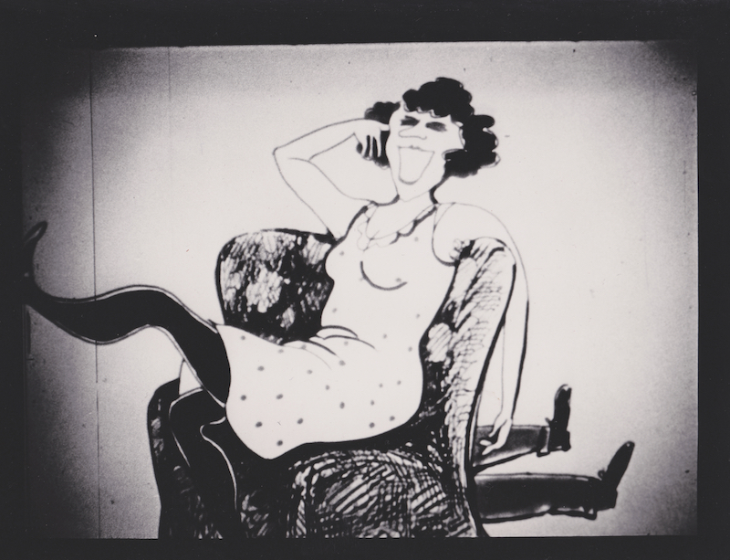
Watch out: if you insist on saying "I'm not a Feminist, but…", then you may well find yourself pushing the old man over the edge or behind the sofa, as the case may be.
Rimminen's feminism has a playful and ironic element to it; her films show just how possible it is to combine critical cinema and entertainment.
Ulrich Wegenast — Trickfilm Festival Stuttgart retrospective, April 1998
Debra Thaine, Denise Hambry, Stoney Parsons, Chris Rayment, Tessa Sheridan
Rostrum camera
Cartoon Camera Co, Wolff Productions, Begonia Tamarit
Editing and sound
Charlotte Evans
Voices
Glynis Brooks, David Tate, Anita West
Music
Composed and performed by Dick Heckstall-Smith and Dave Moore. Sung by Lorna Rowe and Tracy King.
Director
Marjut Rimminen
Producer
Dick Arnall
Production
A Marjut Rimminen Animation production in association with Channel Four Television
🥈 Special Jury Prize, 1986 Cinanima International Animation Festival, Portugal
Trip to Eternity / Matka iankaikkisuuteen
1972 · 16mm · 2 minutes
A film by Marjut and Sakari Rimminen
An actor is prepared for the final shot in this pastiche of filmmaking. A macabre comedy sketch by sister and brother.
Credits, awards and screenings
Production
A Rimminen and Rimminen production for YLE and Suomen elokuvasäätiö
Distribution
Elokuvakontakti
🥉 Honourable Mention, 1973 Lübeck Film Festival
The Bridge / Silta
1982 · 35mm · 8 minutes 43 seconds
A man and a woman engage in a desperate battle between gloom and hope.
The Bridge by Marjut Rimminen is one of the finest Finnish animations through decades. It is a satire of war and peace, of optimism and pessimism. It explores the limitations of our reality with black humour. It is about the struggle between hope and despair, that neither of them wins, but life goes on.
Tampere Film Festival 1998 retrospective
Credits, awards and screenings
Script, design, animation, direction
Marjut Rimminen
Editing
Oskari Viskari
Rostrum camera
Lauri Pitkänen
Music
Joe Davidow
Producer
Mikael Wahlforss
Production
Epidem
Financed by
YLE, Swedish Radio, Suomen elokuvasäätiö
🏅 Valtion laatutuki, 1983 — Finnish State Quality Grant
The Frog King
1989 · 35mm · 7 minutes
A winner in the Kellogg's Magic Mirror animated fairytale competition. The brief was to make a personal interpretation of a classic fairytale.
Credits, awards and screenings
Script
Simon Bent
Design and animation
Marjut Rimminen
Additional animation
Jeff Goldner, Kathleen Houston, Sarah Vincent
Assistant animators
Vanessa Luther-Smith, Caroline Cole
Painting
Heini Kauppinen, Susan Edwards, Sheila Eaton
Checking
Stoney Parsons
Rostrum camera
Heather Reader
Editing and sound
Picturehead Productions
Voices
Denise Bryer, Peter Hawkins
Director
Marjut Rimminen
Producer
Ragdoll for Kellogg Company
Absolut Marjut Rimminen
1996 · BetaSP · 2 minutes
Part of the Absolut Panushka Experimental Animation Website. Twenty-four animators were each asked to interpret the classic Absolut bottle silhouette in their own distinctive styles, ten seconds each. The first website on the Internet to exhibit experimental animation. Absolut Marjut Rimminen is an edited compilation of all the experiments she made for it.
Credits, awards and screenings
Animation, compositing, direction
Marjut Rimminen
Editing
Tamara MacLachlan
Producer
Debra Callabresi
Production
Troons Ltd
Client
Absolut Vodka
🥇 Joop Geesink Prize for Best Campaign, 1996 Holland Animation Film Festival, Utrecht
🥇 Best Animation Produced for the Internet, 1997 Los Angeles World Animation Celebration
Finalist, Cool Design Award, 1997 Cool Site of the Year
🥉 Honourable Mention, Communications Art Interactive Design Annual 1997
Mixed Feelings
1998 · BetaSP · 3 minutes per episode
Episodes "Virginia" and "Anita", directed by Marjut Rimminen and Gillian Lacey
A series of four programmes for Channel 4's Whose Choice? season, commemorating thirty years since the change of the abortion law in England. Virginia's and Anita's stories are the first two of four personal accounts of different experiences of abortion.
Credits, awards and screenings
Researcher
Rachel Bailey
Production manager
Nicolette Howard
Camera
Terry Flaxton
Sound
Jonathan Enkel
Dubbing mixer
George Foulgham
Composers
Sue Herrod, Mieko Shimizu
Digital compositing
Timo Arnall, Marjut Rimminen
Editing
Tamara MacLachlan
Direction
Marjut Rimminen
Producer
Marilyn Milgrom
Production
An APT production for Channel 4
Distribution
Channel Four International
Commercials, 1972–2001
Selected commercials
Marjut has directed and animated television commercials in Finland and the UK since 1972, over thirty years of work across more than forty productions. She is widely recognised as the most internationally awarded Finnish animator working in advertising.
Vivante1972 — Berner / Lintas. 🥇 Best Animated Commercial, Zagreb World Animation Festival 1972 · 🥈 Hopeaklaffi 1972.
Enstex1980 — Reima / Ervaco. 🥈 Hopeaklaffi 1980.
White Cap1983 — Marli. 🥈 Hopeaklaffi 1983 · 🏅 Personal Achievement, Finnish Advertising Film Competition 1983 · Finalist, New York Film and TV Festival 1984.
Mehukatti — Marli / Tehomainos. 🥈 Hopeaklaffi.
UPO Tehokarhut — UPO / Creator. 🥉 Honourable Mention, Vuoden Huiput.
Nokian NRV — Kastemato — Nokia / PHS. 🥇 Best Seconds of the Month · 🥇 Epica Awards Gold Medal.
Take and Bake Pizza — HK / Publicis-Törmä.
Hovi — peilit — Valio / SEK and Grey.
Sunnuntai — Pullapoika — Raisio / Publicis.
Pomppis — leipuri — Kotileipomot / Särkkä.
La Gala — tankarunot — Valio / Creator-Grey.
Hui Kauhistus — Valio / PHS, design by Mauri Kunnas.
Madame — A-lehdet / Creator-Grey.
Teitten Ritari — Liikenneturva / Vega, design by Christine Roche.
UPO weather, laundry, allergy spots — UPO / Creator.
Kulinaari — Paulig / SEK and Gray.
OL detergents — Konsepti.
Vitaplus — Indal / Womena.
Yaxa.
SIPS — Sleeping Beauty / Little Red Riding Hood — Tehomainos.
Hermesetas — Seitsenmainos.
Wolz.
Hi-Invite.
Formia.
Kunnox.
Valintatalo — Kotkan Ruusu / Hyvä tyttö — Valintatalo.
13–19 — Kun iho huutaa apua — Womena.
Marjut Rimminen has been making TV commercials for over thirty years, longer than many in the industry have been alive. She is the most internationally recognised Finnish animator working in advertising.
Markkinointi and Mainonta — November 2000
Making commercials is an excellent way to keep bread on the table, develop your craft, and get to try ever-new techniques.
Marjut Rimminen — Ilta Sanomat, 10 March 1997
Trailers and idents
Trailers and idents
Unicef AIDS Red Ribbon2001 — 1 minute 10 seconds, Digibeta. On a tightrope, young adults are balancing their sexual activity with the threat of AIDS / HIV. Part of the Unicef Anijam project, created by fourteen of the world's animators. Script: Christine Roche and Marjut Rimminen. Animation: Marjut Rimminen. Digital compositing: Timo Arnall. Producer: Mikael Wahlforss. A Tricky Films Production for Epidem ZOT. Commissioned by UNICEF.
100 Years of Cinema — Finnish Film Foundation. Music by Andy Cowton.
Tampere Film Festival — Tampere International Short Film Festival.
Cinenova — Cinenova Film Distributors. Music by Andy Cowton.
Absolut — Troon Ltd.
Tricky Films — own studio ident.
About
Marjut Rimminen
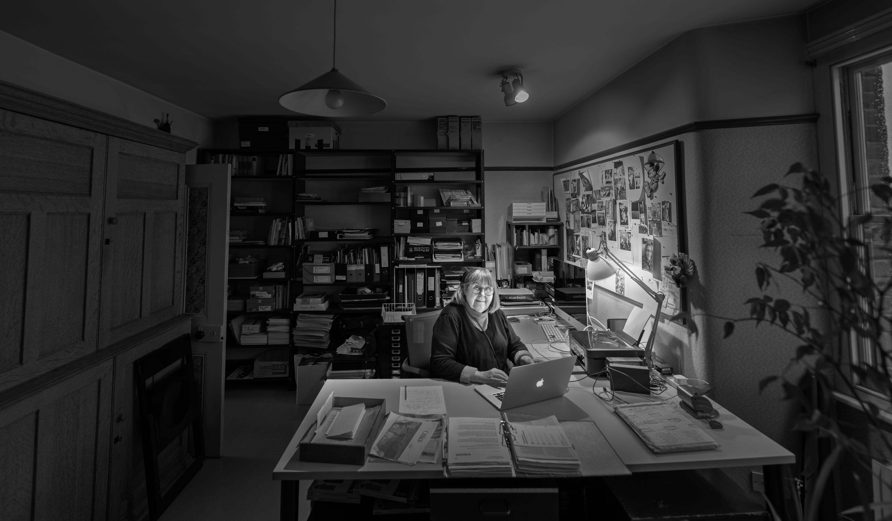
Finnish animator and director, based in London since the early 1970s. Studied graphic design at the Helsinki College of Applied Arts, graduating in 1968. Started making animated television commercials, one of which was named Best Commercial at the 1972 Animafest Zagreb. The following year she joined Halas and Batchelor Animation in the United Kingdom, and has lived and worked in London ever since.
Her work moves fluently across illustration, drawn cel, puppet, clay and pixillated animation, 3D and CGI, vector, and digital compositing, often combining several techniques in a single sequence. The Stain and Many Happy Returns are the most layered.
Her short films and commercials have been screened at festivals around the world, and she has served on numerous festival juries. She teaches animation direction at the National Film and Television School in London and Aalto University in Helsinki, has taught at the Royal College of Art and the Institute of Art and Design in Surrey, and continues to give master classes and workshops internationally.
Retrospectives of her work have been held at the Tampere Film Festival and Stuttgart Trickfilm Festival (both 1998), Animerte Dager in Norway (1999), and Tricky Women in Vienna (2008).
Frequent collaborators include her husband, British animation producer Dick Arnall (1944–2007), and their son Timo Arnall, who composited many of the later films and commercials.
Marjut Rimminen is one of the most complex protagonists in the European animated film world. This is reflected in both the multitude of animation techniques and in particular the complexity of her topics. Her films often have a documentary core, but it is on the whole difficult to categorize them. After a closer inspection of the films, one notices an effective narrative technique, and rather unconventional fact, that despite the films undoubtedly are animated, they seem strangely 'real'.
Ulrich Wegenast — Trickfilm Festival Stuttgart, April 1998
Channel 4 in the commissioning and broadcasting of new independent work have prompted the emergence of highly talented female animators … The Leeds Animation Collective, Joanna Quinn, Candy Guard, Erica Russell, Marjut Rimminen and Ruth Lingford have created a distinctly 'feminine aesthetic' which has challenged dominant orthodoxies not merely in British animation but in the form per se.
Paul Wells — Art of the Impossible, in Film: The Critics' Choice, 2002
Even my first film was a combination of separate pieces. I don't know why I like this so much, just as I like to collect crappy junk and bits and bobs and turn them into something new. I seem not to want to sustain a long continuity. I like fragments. That's just something in the nature of my psyche.
I don't believe in happy endings, so I can't use them. I find them mostly false. Perhaps I haven't matured enough to see how I could change the course of these tragedies, so for the moment, tragedy is apparently just the medium I am happy with.